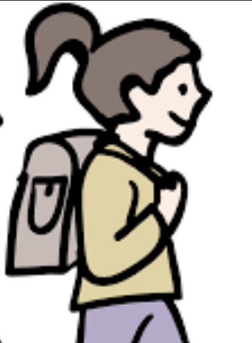
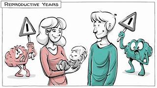

Supporting your health journey through every stage of life with expert guidance, compassionate care, and personalized resources.
Chat with Chattie
Navigating puberty, menstruation, and emotional changes with confidence and support.

Empowering your choices whether focusing on career, family planning, or both.
Transitioning gracefully through hormonal shifts with personalized care.
Embracing your sage wisdom while maintaining vitality and purpose.